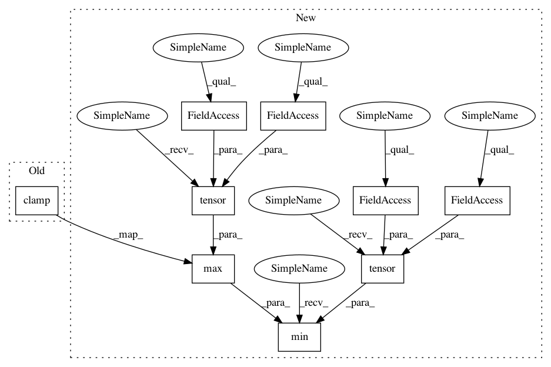

ff9c1dac887643e464f5f829c7d8b920b0aa8140,rllib/utils/exploration/ornstein_uhlenbeck_noise.py,OrnsteinUhlenbeckNoise,_get_torch_exploration_action,#OrnsteinUhlenbeckNoise#Any#Any#Any#,146
Before Change
torch.isinf(high_m_low),
torch.ones_like(high_m_low).to(self.device), high_m_low)
noise = scale * self.ou_base_scale * self.ou_state * high_m_low
action = torch.clamp(det_actions + noise,
self.action_space.low[0],
self.action_space.high[0])
// No exploration -> Return deterministic actions.
else:
action = action_dist.deterministic_sample()
After Change
torch.ones_like(high_m_low).to(self.device), high_m_low)
noise = scale * self.ou_base_scale * self.ou_state * high_m_low
action = torch.min(
torch.max(
det_actions + noise,
torch.tensor(
self.action_space.low,
dtype=torch.float32,
device=self.device)),
torch.tensor(
self.action_space.high,
dtype=torch.float32,
device=self.device))
// No exploration -> Return deterministic actions.
else:
action = action_dist.deterministic_sample()
In pattern: SUPERPATTERN
Frequency: 3
Non-data size: 9
Instances
Project Name: ray-project/ray
Commit Name: ff9c1dac887643e464f5f829c7d8b920b0aa8140
Time: 2020-07-28
Author: sven@anyscale.io
File Name: rllib/utils/exploration/ornstein_uhlenbeck_noise.py
Class Name: OrnsteinUhlenbeckNoise
Method Name: _get_torch_exploration_action
Project Name: ray-project/ray
Commit Name: ff9c1dac887643e464f5f829c7d8b920b0aa8140
Time: 2020-07-28
Author: sven@anyscale.io
File Name: rllib/utils/exploration/gaussian_noise.py
Class Name: GaussianNoise
Method Name: _get_torch_exploration_action
Project Name: ray-project/ray
Commit Name: ff9c1dac887643e464f5f829c7d8b920b0aa8140
Time: 2020-07-28
Author: sven@anyscale.io
File Name: rllib/agents/ddpg/ddpg_torch_policy.py
Class Name:
Method Name: ddpg_actor_critic_loss